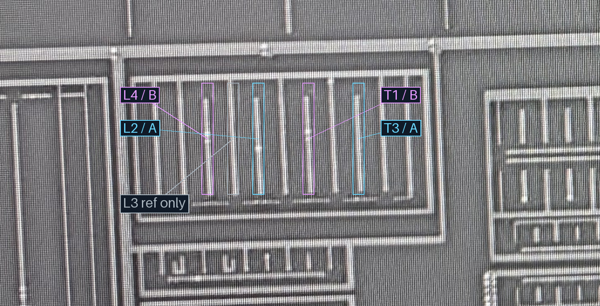
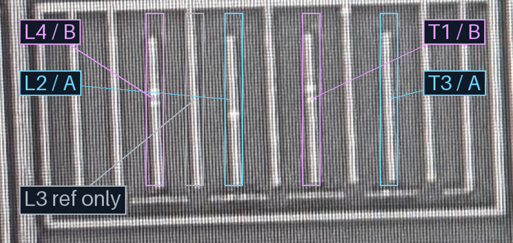
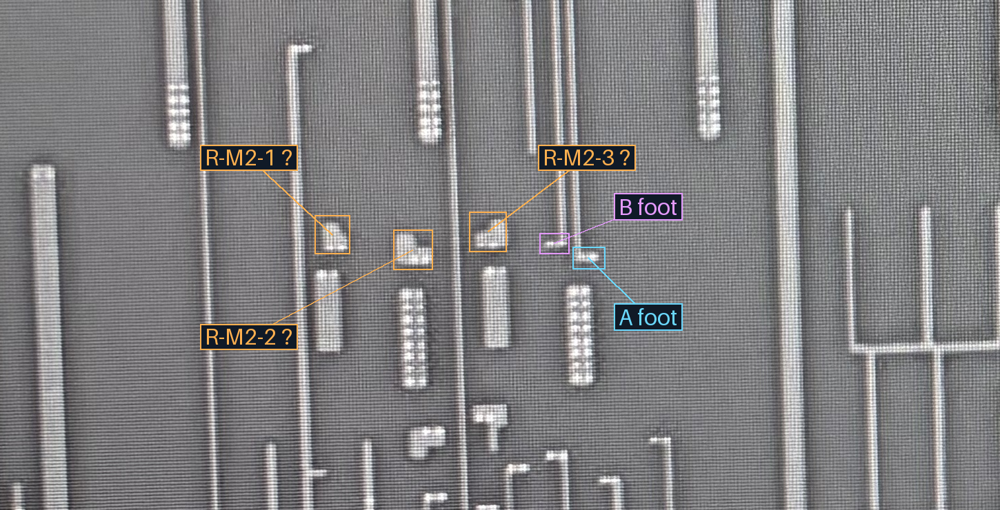
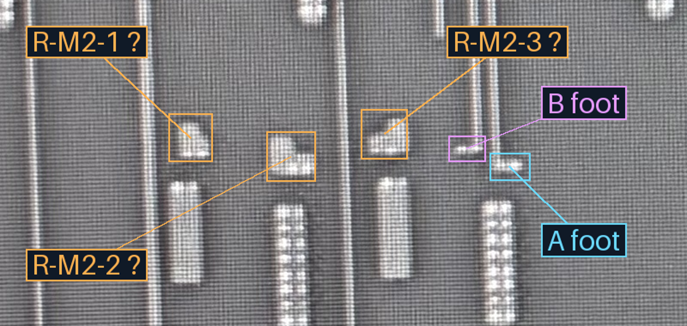
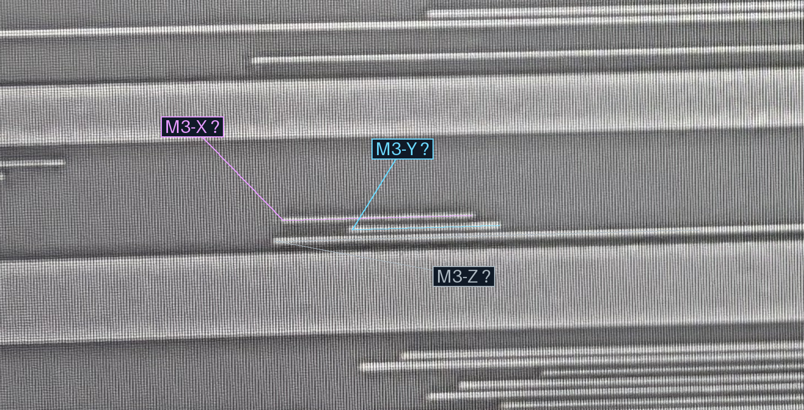
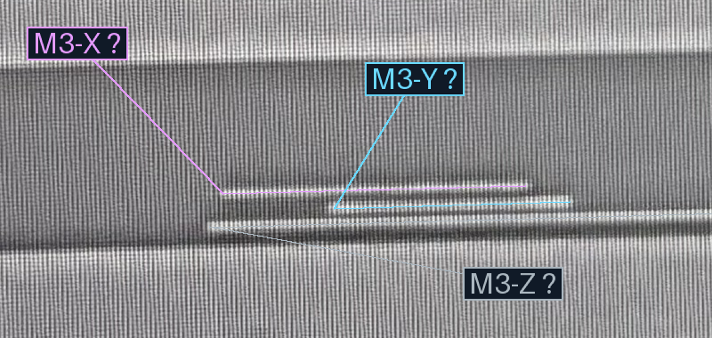

2026-10-23 · 用户更正原文 · 当前分组状态v3
| 组 | 当前M1成员 | 锚点／路径层次 |
|---|---|---|
| A | T3、L2 | 经M2／M3接A |
| B | T1、L4 | 经M2／M3接B |
青色为A组，紫色为B组；灰色L3仅作参照。颜色框表示跨层同组成员，不在M1上绘制同层短接。L3退出本组不等于已证明其全局与A断开。
更正后当前成员对应源图L4／L2／T1／T3，相邻间距123／121／121，与交错重复结构相容。这仅恢复原单图结构支持，不构成V1/V2孔位、M3-X/Y承载或精确配准证明。未移动任何材料／导体几何，未生成新孔。
旧35条局部接口、H1→V1→A、H2→V1→B及本处与U1/U2隔离均保留。本次修正两组中的一项成员，不增加组数或逐孔接口；两个分组仍以结构推断为证据基础。M3-X/Y和返回M2的具体承载待核。






原始照片、旧裁决及旧页面保留原样。无新投影或自动网表边，未实测浏览器交互。